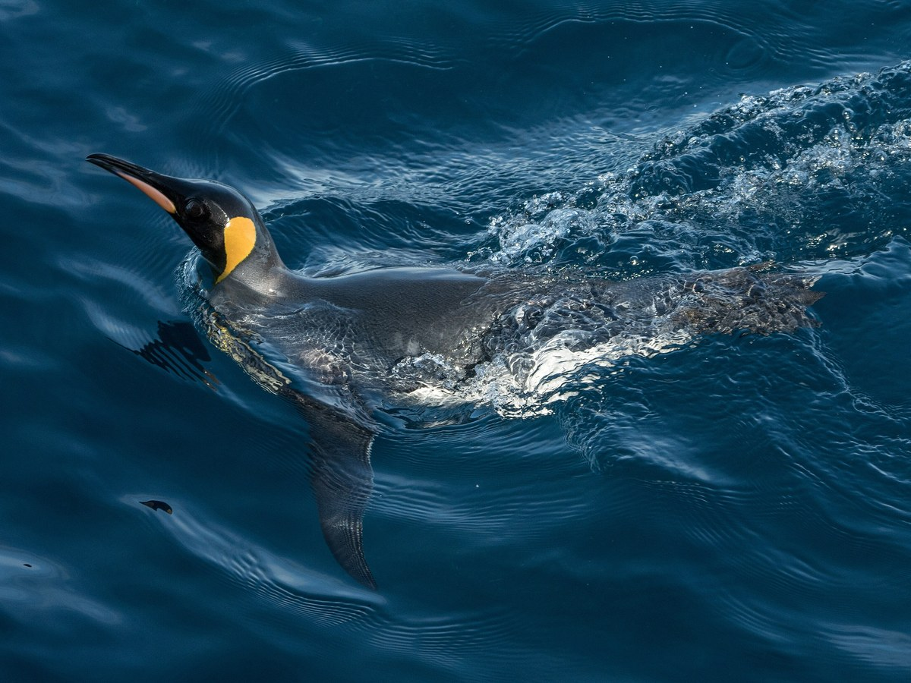

Ocho pingüinos en seguimiento, seis sin padrino
Pingüinos para apadrinar en Crozet
Protegeremos 97,5 km² de costa en la Isla Alfred Faure con el alquiler de un campus de IA del interior. Tu cuota pagará el seguimiento de un pingüino concreto.

Santuario Crozet en 35 segundos
Por qué apadrinar un pingüino, contado en un vídeo. Tiene sonido.
La idea
Una cuarta parte de la isla se alquilará a empresas como campus de inteligencia artificial, refrigerado con aire a 3,5 °C y movido por el viento. Ese alquiler pagará la vigilancia de la costa y su fauna. Los clientes aún no están confirmados.
Cómo paga el campus la reserva
-
100 MW de viento en las crestas
25 aerogeneradores de 4 MW y 200 MWh de baterías, en el 10 % de la isla, darán la energía al campus y a la base científica, 100 % renovable en balance anual. En los temporales, el campus reducirá su carga flexible y un respaldo crítico de 15 MW con biocombustible mantendrá lo esencial.

-
Centros de datos enfriados con aire
Centros de datos modulares en los valles del interior, 37,5 km², enfriados con el aire de fuera: 0 litros de agua dulce.

-
El alquiler vigila la costa
Las empresas pagarán el alquiler del campus y con él se protegerá el 65 % de la isla, con 2 km de exclusión alrededor de las colonias de pingüino rey y elefante marino.

La isla, en tres zonas
Dos tercios de la isla serán reserva natural. El resto producirá la energía y el dinero que la mantienen.
- 1 · Reserva natural y científicaLa costa, los acantilados y las playas de cría97,5 km²
- 2 · Campus de inteligencia artificialValles del interior, alquilados a empresas37,5 km²
- 3 · Parque eólico y micro-redCrestas del norte, junto al Pic du Mascarin15 km²

Una isla volcánica de 150 km² en el Índico sur
Viento casi todo el año y de 3,5 a 4 °C de media. Allí crían el pingüino rey, el albatros errante y el elefante marino del sur.

Tres de los pingüinos que buscan padrino
Cada uno tiene un código de seguimiento y lo sigue un investigador sin tocarlo. Al apadrinarlo le pones nombre y pagas un año de seguimiento.